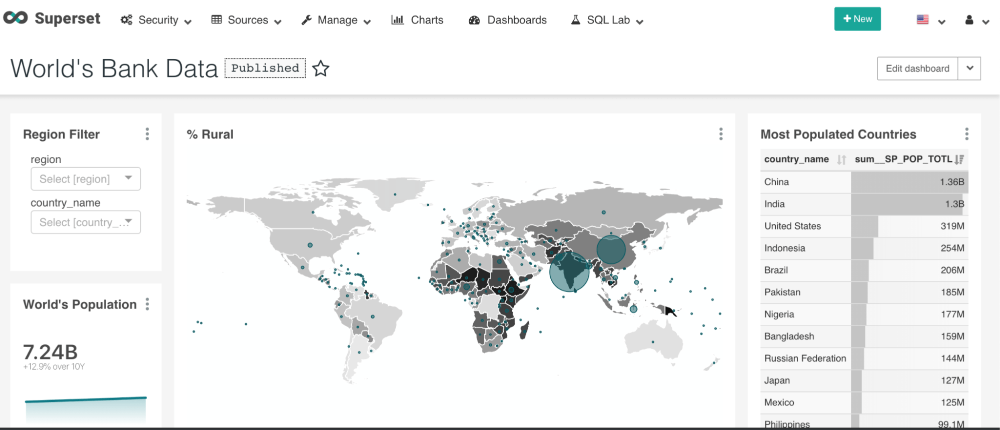

El mundo de la ciencia de datos es enorme e imposible de aprender en su totalidad, pero todo empieza por nociones. Espero que este artículo te funcione como una breve referencia a todos los conceptos base de la ingeniería de datos que es una tarea esencial de la ciencia de datos. Si funciona como una vista general y básica de la ingeniería de datos, ha cumplido su cometido. Pronto tendremos la charla Modelado de una DataWarehouse con DBT en PyBAQ que tratará un tema muy específico de este mundo.
Estadística en Ciencia de Datos
Si tienes interés en Python en estos días escucharás muchísimo de Análisis, Ciencia, Ingeniería o Arquitectura de Datos (entre otros términos o disciplinas). Cada uno de los anteriores términos representa o describe diferentes trayectorias profesionales que podemos tomar en el mundo de los datos. Pero el inicio de la ciencia de datos es más sencillo que todos estos términos; todo empieza con estadísticas1.

La estadística no solo es el inicio sino también la columna vertebral de la ciencia de datos. Nos sirve pensar esto porque la estadística exige o requiere un mínimo de los datos que estudia: que los datos estén completos, que sean consistentes, que sean preferentemente precisos y también homogéneos con respecto a lo que describen o miden2. Se requiere un esfuerzo significativo para establecer sistemas que de manera consistente produzcan datos de tal calidad. Pero no solo se trata de estadística, la ciencia de datos tambien incorpora habilidades de:
- ciencias de computación
- estadística
- ciencias de información
- matemáticas
- visualización de datos
- visualización de información
- sonificación de datos
- integración de datos
- diseño gráfico
- sistemas complejos
- comunicación
- negocios
Ingeniería de Datos
¿Donde se verificarán que los datos cumplan con los requerimientos de la estadística? ¿Donde se realizarán los computos y se mostraran graficas? ¿Donde se realizarán todas las operaciones requeridas?. La ingeniería de datos es la práctica que consiste en diseñar y construir sistemas de recogida, almacenamiento y análisis de datos a gran escala3. Entonces un ingeniero de datos crea las estructuras (bases de datos, aplicaciones, etc…) y las operaciones (extracción, transformación, carga) que soportan todas las disciplinas involucradas en la ciencia de datos. Podria decirse que la ingeniería de datos se encarga de la parte operativa de estos procesos. Se requerirá que el ingeniero adquiera nociones, habilidades y concimiento de muchos aspectos de la ciencia de datos.

Origen de Datos, Tipos de Datos y Lagos
La información no se genera según un cronograma en la vida real. Las entregas se retrasan, también lo hacen los procesos de fabricación, sean automatizados o no. La vida sucede cuando no la esperamos y a veces no sucede cuando estamos acostumbrados; dejemos esa idea en remojo, solo retengamos que el flujo de datos no siempre es predecible ni tienen un lugar claro donde preservarse en su forma original. Por ese motivo se creó la noción de Lagos de Datos y Colas de procesamiento. Las colas resuelven la periodicidad de los datos; independiente de lo regular o irregular que sea su origen esto entran a la cola de procesamiento. Los lagos de datos ayudan a almacenar la información en su estado original a fin de permitir revisitar los procesos y aplicar nuevos criterios a viejos datos. El lago de datos idealmente retiene información del origen de datos y el tipo de dato almacenado, sean estructurados, semi-estructurados o no estructurados.
Los datos estructurados son datos que tienen un formato estandarizado para acceso eficiente tanto por software como por humanos4. Típicamente el formato es tabular con filas y columnas que claramente definen atributos de datos. Las computadoras pueden procesar efectivamente datos estructurados. El documento que garantiza o documenta la estructura de datos se llama “schema” (que traduce esquema, o esquema de datos en este contexto). En SQL (por sus siglas en inglés Structured Query Language; en español lenguaje de consulta estructurada) existen una serie de comandos orientados al modelado de datos. Las bases de datos resultado del modelo de datos que se cree a través de SQL garantizará que los datos que se inserten cumplan los requerimientos del modelo. Lo importante a retener: Existen datos estructurados y los schemas garantizan/salvaguardan su estructura.
Los datos semi-estructurados no se adhieren a un modelo de datos específico, pero tienen elementos estructurados bien sea en el formato o que algunos atributos correspondan a un modelo mientras otros no5. XML y JSON son los ejemplos clásicos de este tipo de datos porque tienen una estructura estandarizada que, sin embargo, no garantiza una la estructura de los datos que almacena. Por su flexibilidad estos formatos han sido usados en aplicaciones de escritorio y web por décadas; por eso existen herramientas para forzar/verificar que estos mantengan una estructura definida. Para XML podemos mostrar los XSD y para JSON existe json-schema. Este tipo de schemas permiten estructurar parcialmente los datos guardados en estos formatos por lo que la noción de datos semi-estructurados se mantiene aunque exista un schema.
Los datos no estructurados superan a todos los anteriores en volumen y su estructura es impredecible6. Un ejemplo cercano a los datos semi-estructurados son las páginas web. Estas contienen texto, imágenes, videos, formularios y funcionalidades que son datos no estructurados; son no estructurados porque la estructura no captura el significado del contenido. Otro ejemplo importante de datos no estructurados son los registros médicos: tanto los registros escritos como aquellos derivados de la lectura de imágenes diagnósticas contienen muchísima información basada en el contexto de la relación médico-paciente y los síntomas siendo analizados en el momento. Una gran cantidad del desarrollo de inteligencias artificiales tiene como meta lograr interpretar estos datos con el fin de facilitar su análisis.
¿Que es importante retener de esta sección? Existen varios tipos de datos y se puede usar un lago de datos para almacenar muchos tipos de datos. Agreguemos una noción: el lago de datos puede ser algo que cree y mantenga una organización o puede ser contratado como un servicio de terceros.
Una breve alegoría de Ingeniería de Datos
Empezamos con el concepto de lago de datos (Data Lake) y debemos seguir con el Almacén de datos (Data Warehouse) pero a veces el lenguaje simbólico se puede mantener a fin de crear una alegoría. Entonces pensemos en el almacén de datos como un tanque elevado. La naturaleza (origen de datos) es de donde sacamos el agua (datos). El agua no se origina en el Lago, el agua se mueve constantemente en su ciclo que pasa por nubes, montañas, valles, arroyos, ríos, etc… Pensemos en el lago de datos como un reservorio artificial. Para potabilizar el agua hay que extraerla de su ciclo y ubicarla en su reservorio, extraerla del reservorio, procesarla y luego transmitirla al lugar de almacenamiento, este proceso se llama ETL (“Extraction, Transformation and Loading” de sus siglas en inglés, traduce Extracción, Transformación y Carga). El agua se mueve a través de tubería y de allí se obtuvo la simbología de “Tubería de Datos” (Data Pipelines). La alegoría se rompe en el aspecto de tubería de datos, ya que a diferencia del proceso de tratamiento de aguas, los datos se procesan de manera diferente según su tipo y características. Se mantiene en el sentido que al final del proceso todos estos datos deben terminar en una estructura pensada para facilitar su uso y análisis, lo que es equivalente al consumo de agua potable.

Nota importante: No es cierto que siempre haya un lago de datos del que los datos se extraen a un almacén de datos. De hecho esta configuración es rara. Normalmente los datos van directo de la fuente al almacén por el proceso de ETL o ELT. También es más común que tú almacén de datos pueda almacenar datos no estructurados y por eso no hay lago, solo almacén7.
Modelos de datos y sus tipos
Los modelos de datos de aplicaciones por lo general están creadas usando base de datos(BD) relacionales, esto es, tablas con filas y columnas que representan instancias y atributos respectivamente. A fin de tener datos correctos y fáciles de mantener, en general se normalizan hasta la 3ra forma normal8. Estos modelos son conocidos como OLTP porque, por su naturaleza se implementan para procesos transaccionales en línea (por ejemplo, cuando compras un jeans en una tienda de retail o cuando pagas en el super con tu TC). Una BD modelada y configurada de esta manera se considera óptima para OLTP (Online Transaction Processing de sus siglas en inglés, Procesamiento de Transacciones en Línea). Las BDs OLTP son óptimas para las operaciones UPDATE, INSERT, DELETE. Si quisiéramos hacer reportes basados en una BD optimizada para OLTP de seguro tendríamos que usar consultas de SQL que muchas operaciones de unión, lo que penaliza la operación de la BD y hace las consultas difíciles de mantener en el tiempo9.
La contraparte de un modelo de datos OLTP sería crear un modelo de datos que no esté normalizado hasta su tercera forma normal y que facilite la consulta. Este sería un modelo optimizado para el análisis de datos y se llama OLAP (Online Analytical Processing de sus siglas en inglés, Procesamiento Analítico en Línea)10. En este aspecto el modelo de estrella (Star Schema) y el de copo de nieve (Snowflake Schema) son los más utilizados. Para migrar datos de un modelo OLTP a otro correspondiente OLAP se debe entender el modelo de origen y entender cómo crear el modelo de destino. Acerca de un modelo de datos de estrella debemos saber que hay 2 tipos de tablas: tablas de hechos y tablas dimensionales11. Las tablas de hechos describen un hecho concreto: la venta de un ítem, la llegada de un producto o la terminación de un proceso. Las tablas dimensionales representan datos extras o dimensiones acerca de ese hecho; una dimensión de fecha registra en qué fecha sucedió el hecho, por ejemplo. En un modelo de copo de nieve (snowflake) las dimensiones pueden subdividirse en subdimensiones; fecha y hora son un ejemplo de posibles subdimensiones de una dimensión de tiempo.
 |
 |
|---|---|
Desde una perspectiva de gestión de proyectos, estos procesos pueden implementarse de múltiples maneras. En la historia de arquitectura de datos se consideran los métodos Kimball e Inmon12 como las bases teóricas más conocidas. Estos se mencionan para que puedan expandir en el tema por su parte.
A manera de resumen, un almacén de datos es un repositorio planeado y estructurado. Se usa un esquema OLAP, por lo general un modelo de estrella o de copo de nieve. Usando ese modelo se almacenan datos desnormalizados y estos a su vez están disponibles para ser analizados, formar parte de reportes, ser transformados aún más o todas las anteriores.
Resultados y visualización
Al final de todo este proceso y sin importar cuantas disciplinas diferentes hayan estado involucradas, lo único visible de todo este esfuerzo es lo que los usuarios finales puedan usar. En este respecto existen los reportes y los tableros de control (dashboards). En este respecto no hay mucho que decir salvo que no deben ser subestimados. Existen cientos de herramientas diseñadas para facilitar la creación de reportes y tableros13.
Los tableros sólo pueden reflejar la calidad de datos generados en los procesos anteriores y son la razón detrás de la necesidad de revisitar y modificar los procesos de transformación una y otra vez. Bien sea el usuario final o los analistas de datos necesitan poder hacer inferencias de los datos y presentar las conclusiones alcanzadas de una manera efectiva. Existen gráficos diseñados y perfeccionados en el tiempo para representar muchas características estadísticas de los datos. Existen otros gráficos necesarios para contextualizar rápidamente la información, siendo un ejemplo claro la utilización de mapas en datos geolocalizados. Abajo se muestra un ejemplo de tablero generado usando Apache Superset.

Por Aprender
Como ven el mundo de la ciencia de datos e ingeniería de datos no empezó ayer ni se terminará mañana. Para tener una visión general de todos los frameworks pagos y no pagos relacionados en estas disciplinas les recomiendo ir al siguiente link: Interactive MAD Landscape by Matt Turck. Quien nos deja un tweet que muy elegantemente refleja la complejidad de la tarea que tienen los ingenieros de datos hoy:
It’s easy to succeed in data/AI. All you need is to put data into a DWH for OLAP using ETL, or ELT with DBT. Spot any issues on your DAG, run SQL for some BI, reverse ETL into SaaS or use a CDP, then leverage for ML/AI with CNNs, RNNs, RLs, GANs, and maybe LLMs or LDMs for GenAI.
— Matt Turck (@mattturck) January 4, 2023
Por favor inscríbanse al meetup la próxima semana (encuentran el vincula en el primer párrafo) y estudien. Seguramente si hay interesados pueda hacerse un grupo de estudio de ingeniería de datos. También, este post es interesante como punto de partida en el futuro para aquellos interesados en empezar esta carrera profesional, siéntanse en libertad de sugerir fuentes o cambios el repositorio de github de PyBAQ.
Incluyo algunas librerias relevantes en el tema de ingenieria de datos:
Un agradecimiento especial a Javier Daza, Marcelo Herrera, Adam Carruthers con sus comentarios acerca del artículo y sobre todo a Jorge Aguilar por el contexto inicial brindado en referencia a su próxima Modelado de una DataWarehouse con DBT en PyBAQ.
What is Structured Data? - Structured Data Explained - AWS (amazon.com)↩
Structured Data vs. Unstructured Data - What's The Difference? - Treehouse Tech Group, 8 Examples of Unstructured Data - Treehouse Tech Group↩
Anotación importante por Adam Carruthers.↩
No se trata solo de operaciones de unión, más el poder computacional y la memoria necesitado para usar tantas filas en el base de datos, porque algunos queries las usan todas. Adam Carruthers.↩
Differences Between Fact Table and Dimension Table | Simplilearn↩
Inmon vs Kimball - the great data warehousing debate | by INDRAJITH EKANAYAKE | CloudZone | Medium, Kimball DW/BI Lifecycle Methodology - Kimball Group↩
Choosing an Analytics Tool. Metabase Vs Superset Vs Redash | by Stefan Mihaylov | VorTECHsa | Medium↩